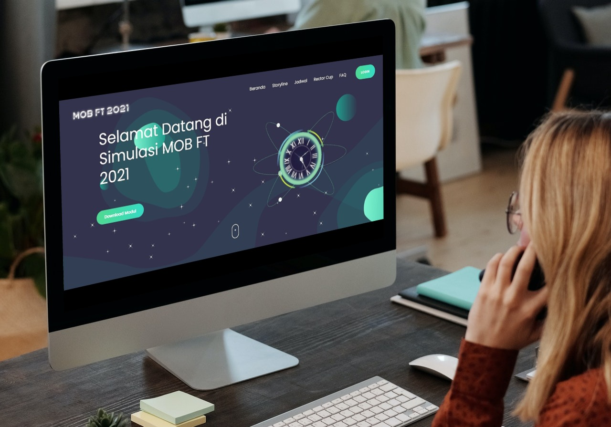
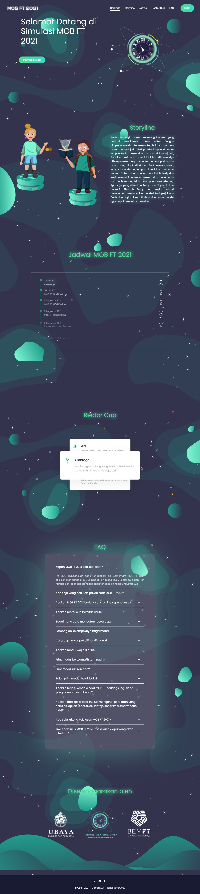

MOB Fakultas Teknik UBAYA 2021 Website
ubayamobft.comalternative website

Developed using Laravel, the website used for the MOB Fakultas Teknik UBAYA 2021 series of events. It consists of the client site and an admin site.
- Client site features: download event modules, change the default password, do attendance, view announcements, view rundowns, view violations that have been committed, collect documents, take quizzes, register for art competitions, and get information about ongoing events
- Admin site features: add announcements, update rundown, manipulate master data, reset user password, open and close attendance, add event support video